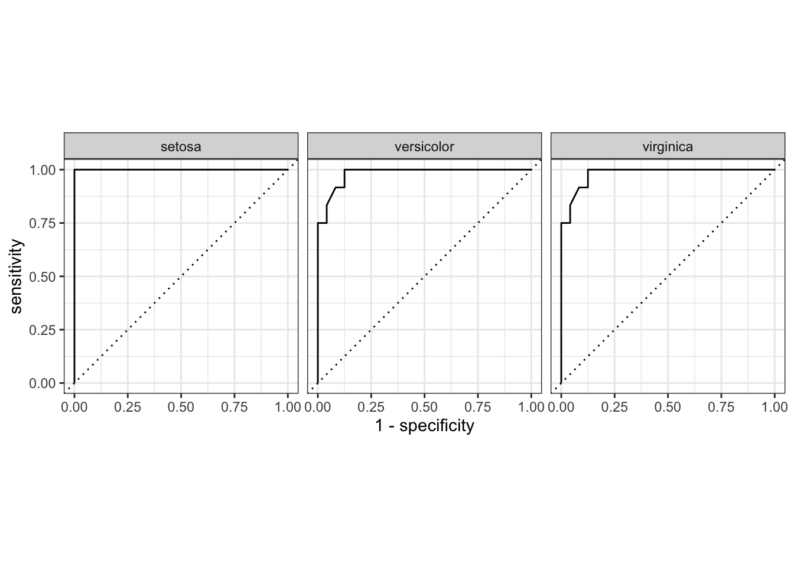

Knime Workflow
Consider this Knime workflow:

That’s a simple Random Forest workflow.
library(tidyverse)
library(tidymodels)
library(conflicted)
library(caret)data(iris)glimpse(iris)## Rows: 150
## Columns: 5
## $ Sepal.Length <dbl> 5.1, 4.9, 4.7, 4.6, 5.0, 5.4, 4.6, 5.0, 4.4, 4.9, 5.4, 4…
## $ Sepal.Width <dbl> 3.5, 3.0, 3.2, 3.1, 3.6, 3.9, 3.4, 3.4, 2.9, 3.1, 3.7, 3…
## $ Petal.Length <dbl> 1.4, 1.4, 1.3, 1.5, 1.4, 1.7, 1.4, 1.5, 1.4, 1.5, 1.5, 1…
## $ Petal.Width <dbl> 0.2, 0.2, 0.2, 0.2, 0.2, 0.4, 0.3, 0.2, 0.2, 0.1, 0.2, 0…
## $ Species <fct> setosa, setosa, setosa, setosa, setosa, setosa, setosa, …split_vector <- initial_split(iris,
strata = Species)traindata <- training(split_vector)
testdata <- testing(split_vector)First define the model:
rf_mod <-
rand_forest(trees = 100) %>%
set_engine("ranger") %>%
set_mode("classification")rf_recipe <-
recipe(Species ~ ., data = traindata)
rf_prep <- prep(rf_recipe)workflow() %>%
add_recipe(rf_recipe) %>%
add_model(rf_mod) -> rf_wf
rf_wf## ══ Workflow ════════════════════════════════════════════════════════════════════
## Preprocessor: Recipe
## Model: rand_forest()
##
## ── Preprocessor ────────────────────────────────────────────────────────────────
## 0 Recipe Steps
##
## ── Model ───────────────────────────────────────────────────────────────────────
## Random Forest Model Specification (classification)
##
## Main Arguments:
## trees = 100
##
## Computational engine: rangerThen fit it:
set.seed(123)
rf_fit <-
rf_wf %>%
fit(data = traindata)rf_fit## ══ Workflow [trained] ══════════════════════════════════════════════════════════
## Preprocessor: Recipe
## Model: rand_forest()
##
## ── Preprocessor ────────────────────────────────────────────────────────────────
## 0 Recipe Steps
##
## ── Model ───────────────────────────────────────────────────────────────────────
## Ranger result
##
## Call:
## ranger::ranger(x = maybe_data_frame(x), y = y, num.trees = ~100, num.threads = 1, verbose = FALSE, seed = sample.int(10^5, 1), probability = TRUE)
##
## Type: Probability estimation
## Number of trees: 100
## Sample size: 114
## Number of independent variables: 4
## Mtry: 2
## Target node size: 10
## Variable importance mode: none
## Splitrule: gini
## OOB prediction error (Brier s.): 0.0267927testdata %>%
bind_cols(predict(rf_fit, testdata, type = "prob")) %>%
bind_cols(predict(rf_fit, testdata)) -> testdata_augmentedtestdata_augmented %>%
roc_auc(truth = Species, .pred_setosa:.pred_virginica)## # A tibble: 1 x 3
## .metric .estimator .estimate
## <chr> <chr> <dbl>
## 1 roc_auc hand_till 0.999testdata_augmented %>%
metrics(truth = Species, .pred_class)## # A tibble: 2 x 3
## .metric .estimator .estimate
## <chr> <chr> <dbl>
## 1 accuracy multiclass 0.944
## 2 kap multiclass 0.917testdata_augmented %>%
roc_curve(truth = Species, .pred_setosa:.pred_virginica) %>%
autoplot()
confusionMatrix(data = testdata_augmented$.pred_class,
reference = testdata_augmented$Species)## Confusion Matrix and Statistics
##
## Reference
## Prediction setosa versicolor virginica
## setosa 12 0 0
## versicolor 0 10 0
## virginica 0 2 12
##
## Overall Statistics
##
## Accuracy : 0.9444
## 95% CI : (0.8134, 0.9932)
## No Information Rate : 0.3333
## P-Value [Acc > NIR] : 1.728e-14
##
## Kappa : 0.9167
##
## Mcnemar's Test P-Value : NA
##
## Statistics by Class:
##
## Class: setosa Class: versicolor Class: virginica
## Sensitivity 1.0000 0.8333 1.0000
## Specificity 1.0000 1.0000 0.9167
## Pos Pred Value 1.0000 1.0000 0.8571
## Neg Pred Value 1.0000 0.9231 1.0000
## Prevalence 0.3333 0.3333 0.3333
## Detection Rate 0.3333 0.2778 0.3333
## Detection Prevalence 0.3333 0.2778 0.3889
## Balanced Accuracy 1.0000 0.9167 0.9583